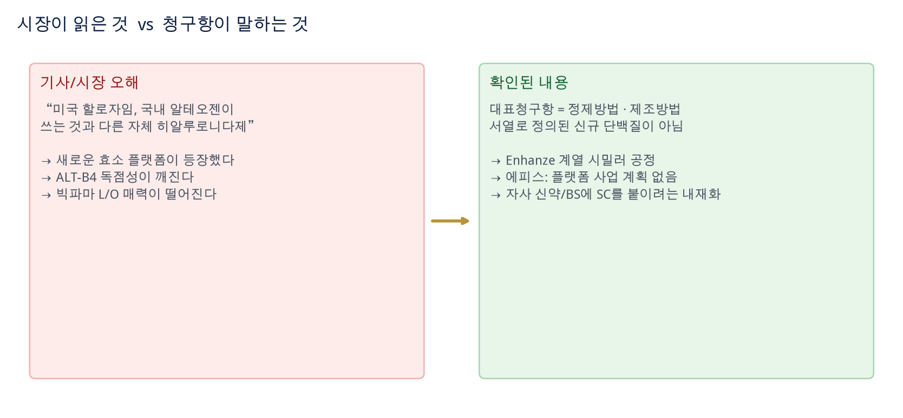
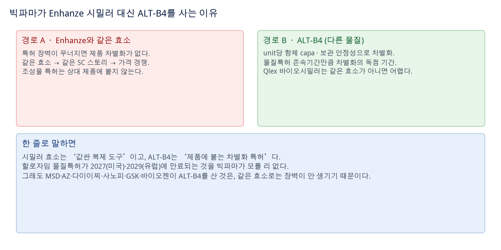
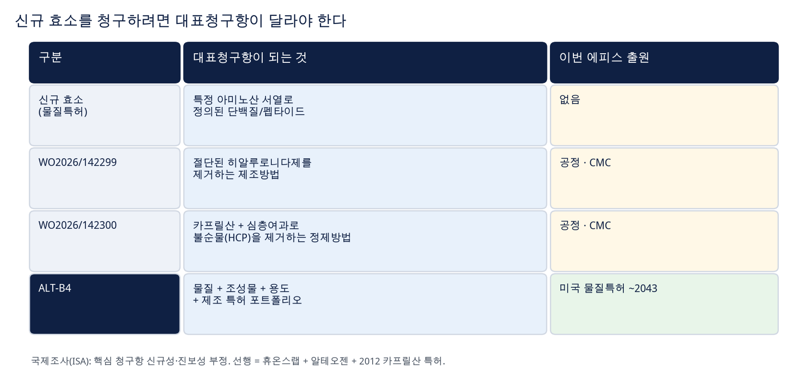
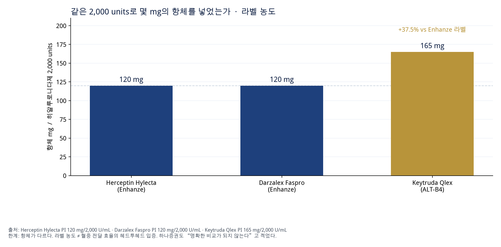
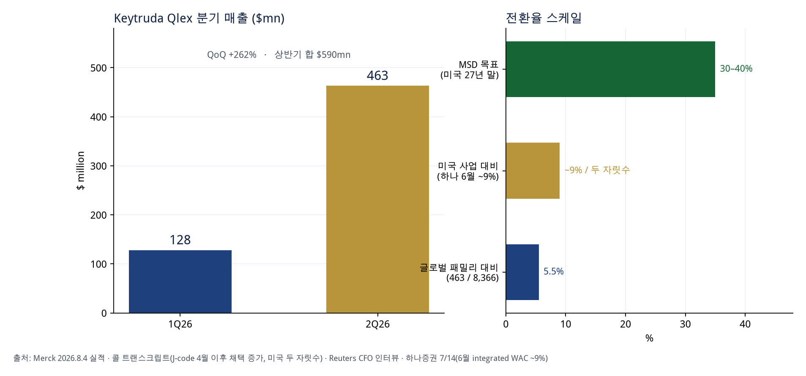
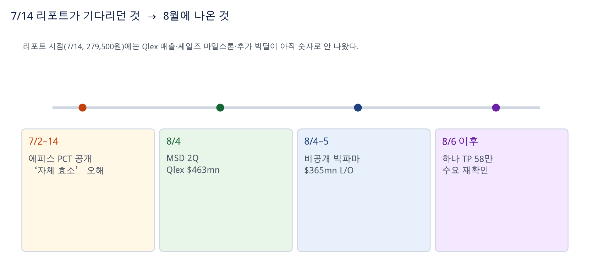
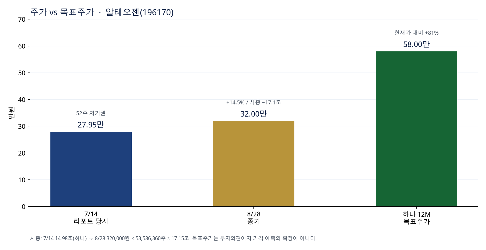
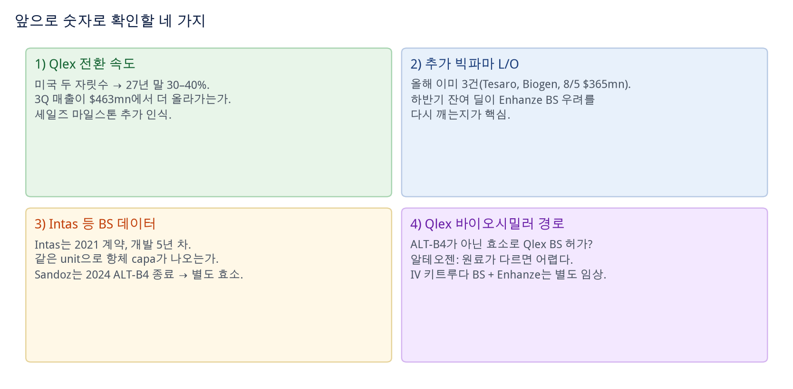

알테오젠 ALT-B4 분석 · 2026-08-28 · 매수·매도 추천 아님
에피스 PCT는 새 효소가 아니라 Enhanze 계열 공정특허 · 빅파마는 차별화 특허를 산다
에피스 특허는 새로운 히알루로니다제 물질이 아니다. 대표청구항은 정제·제조방법이다. 시장이 흔들린 이유는 “자체 효소”라는 기사 문장이지, 청구항이 아니다. 빅파마가 ALT-B4를 사는 이유는 Enhanze 시밀러로는 제품 차별화 특허가 안 생기기 때문이다.

도표 1. 기사가 만든 오해와, 양사 확인·청구항이 말하는 것
| 질문 | 짧은 답 | 확인 |
|---|---|---|
| 에피스가 새 효소를 만들었나 | 아니다. Enhanze 계열 시밀러 + CMC 공정 | 맞음 하나·에피스·알테오젠 취지 일치 |
| PCT 2건이 플랫폼 특허인가 | 아니다. WO299=제조, WO300=정제 | 맞음 제목·대표청구항이 방법 |
| unit당 항체 37.5% 더 많다 | 라벨 농도는 맞다. 전달 효율 입증은 아니다 | 숫자 맞음 / 해석 주의 |
| Qlex 바이오시밀러가 Enhanze로 되나 | 원료가 다르면 단순 BS 허가는 어렵다 | 규제 논리 임상 우회로는 남음 |
| 8월에 우려가 불식됐나 | Qlex $463mn + $365mn 딜로 수요는 재확인 | 이벤트 발생 |
하나증권 7/14 리포트의 핵심 문장은 이것이다. Enhanze와 동일한 효소로 SC를 만들면, 특허 장벽이 무너졌을 때 제품 차별화 요소가 없다. ALT-B4를 쓰면 물질이 다르니, 장벽이 깨져도(Enhanze BS 제품이 나와도) 물질특허 존속기간만큼은 차별화의 독점 기간이 남는다.

도표 2. 같은 효소 = 가격 경쟁, 다른 효소 = 차별화 특허
Qlex의 효소 원료는 berahyaluronidase alfa다. Enhanze(rHuPH20)나 그 시밀러는 다른 원료다. 알테오젠 7/14 입장: 규제 기준상 이를 적용한 제품이 Qlex의 바이오시밀러로 허가받기는 어렵다. 엔허투·듀피젠트 SC에도 같은 논리가 적용될 수 있다고 봤다.
2026년 7월 초 WIPO에 공개된 삼성바이오에피스 PCT 2건이 “자체 히알루로니다제”로 기사화됐다. Businesskorea 등 일부 보도는 “할로자임·알테오젠과 다른 자체 효소, 배양·정제까지 독자 시스템”으로 썼다. 그게 주가 충격의 문장이다.

도표 3. 새 효소를 청구하려면 대표청구항은 서열로 정의된 단백질이어야 한다
| 공개번호 | 영문 제목 | 대표청구항이 청구하는 것 |
|---|---|---|
WO2026/142299 |
Method for removing truncated hyaluronidase | 절단·가수분해된 히알루로니다제를 제거하는 제조방법 (및 그 결과물) |
WO2026/142300 |
Method for removing impurities through caprylic acid and depth filtration | 카프릴산 + 심층여과로 HCP 등 불순물을 제거하는 정제방법 |
팜이데일리(7/14): ISA는 실체 심사 대상 청구항 전부에서 신규성 또는 진보성을 인정하지 않았다.
ISA 의견은 등록 거절이 확정된 것이 아니다. 다만 “새 플랫폼이 등장했다”는 해석을 약화시키는 1차 증거다.
메가경제 등: 에피스는 플랫폼 사업·별도 상업화 계획이 없다고 선을 그었다. “안정적 R&D에 필요한 CMC 특허의 일부”, “어느 제품에 적용할지도 정해진 바 없다.” 하나증권 취지와 같다.
하나: Enhanze를 쓰는 Darzalex SC·Herceptin SC는 120 mg / 2,000 units, ALT-B4를 쓰는 Qlex는 165 mg / 2,000 units로 약 37.5% 더 많은 항체를 혈관으로 전달할 수 있다.

도표 4. 라벨에 적힌 농도. 헤드투헤드 생체이용률 시험이 아니다
| 제품 | 효소 | 라벨 농도 | 1회 투여 |
|---|---|---|---|
| Herceptin Hylecta | rHuPH20 (Enhanze) | 120 mg + 2,000 U / mL | 600 mg / 10,000 U / 5 mL |
| Darzalex Faspro | rHuPH20 (Enhanze) | 120 mg + 2,000 U / mL | 1,800 mg / 30,000 U / 15 mL |
| Keytruda Qlex | berahyaluronidase alfa (ALT-B4) | 165 mg + 2,000 U / mL | Q3W 395 mg / 4,800 U / 2.4 mL Q6W 790 mg / 9,600 U / 4.8 mL |
보관 안정성은 이 라벨 비교만으로는 검증되지 않는다. 파트너가 실제로 그 이유로 ALT-B4를 골랐는지는, Intas 등 BS 데이터나 추가 라벨이 나와야 숫자로 닫힌다.
하나 7/14: “근시일 내 MSD 2Q26 실적(8/4)으로 Qlex 매출 상승과 세일즈 마일스톤을 확인한다. 6월 전환율은 integrated WAC 기준 약 9%.”

도표 5. 8/4에 확인된 매출. 전환율은 글로벌과 미국을 섞으면 안 된다
| 항목 | 숫자 | 출처 |
|---|---|---|
| Keytruda 패밀리 2Q26 | $8.366bn (+5%, ex-FX +4%) | Merck 8/4 보도자료 |
| 이 중 Qlex | $463mn (1Q $128mn, H1 $590mn) | 동일 · 실적표 |
| 글로벌 패밀리 대비 | 463 / 8,366 = 5.5% | 단순 나눗셈 |
| 미국 사업 대비 | CFO: “미국 전체의 두 자릿수”. 하나 6월 ~9% | Reuters 인터뷰 · 하나 7/14 |
| 채택 트리거 | 4월 영구 J-code 이후 의사·환자 채택 증가. 초기에는 단독·경구 병용 중심 | 8/4 실적 콜 |
| MSD 목표 | 미국 2027년 말 30–40% (IV 특허 만료 2028을 ‘언덕’으로) | 경영진 기존 가이드 · Reuters |
하나 7/14: “하반기에도 빅파마 기술이전이 이어질 것이고, 그때 Enhanze BS로 ALT-B4 매력이 떨어질까 하는 우려를 불식시킬 것이다.”

도표 6. 리포트가 예고한 두 이벤트(Qlex 숫자, 추가 L/O)가 4주 안에 나왔다
하나 8/6 후속: “Enhanze의 바이오시밀러가 나와도 ALT-B4 수요는 계속된다($365M 계약 추가).” 상대를 Lilly Taltz, UCB Bimzelx로 추정했으나 공시상 확인되지 않는다. 추정은 추정으로 남겨 둔다.

도표 7. 7/14 52주 저가권에서 8/28 32만원. 목표가 58만은 여전히 갭이 크다
| 2024 | 2025 | 2026F | 2027F | |
|---|---|---|---|---|
| 매출 (십억원, 하나 7/14) | 102.9 | 215.9 | 470.3 | 1,052.5 |
| 영업이익 | 25.4 | 106.9 | 246.1 | 608.7 |
| 지배주주순이익 | 62.3 | 141.7 | 233.0 | 493.3 |
| EPS (원) | 1,171 | 2,633 | 4,320 | 9,146 |
| PER (배, 당시 주가 기준) | 264 | 171 | 65 | 31 |
컨센서스(하나 표): 2026–27 매출 467 / 807, OP 286 / 506. 회사 추정은 2027 매출을 컨센보다 높게 잡았다. 8/6 하나 후속에서 Qlex 추정을 상향했다고 보도됨. 위 표는 7/14 원문 기준.

도표 8. 오해는 풀렸고, 우위를 숫자로 닫는 일은 남았다
하나 7/14는 “하반기 BS 목적 파트너십(Intas, Sandoz 등) 성과”를 기다린다. Intas는 2021.1.7 ALT-B4 2품목 계약(업프론트 $6mn, 마일스톤 최대 $109mn)으로 개발 5년 차 — 이 경로는 살아 있다.